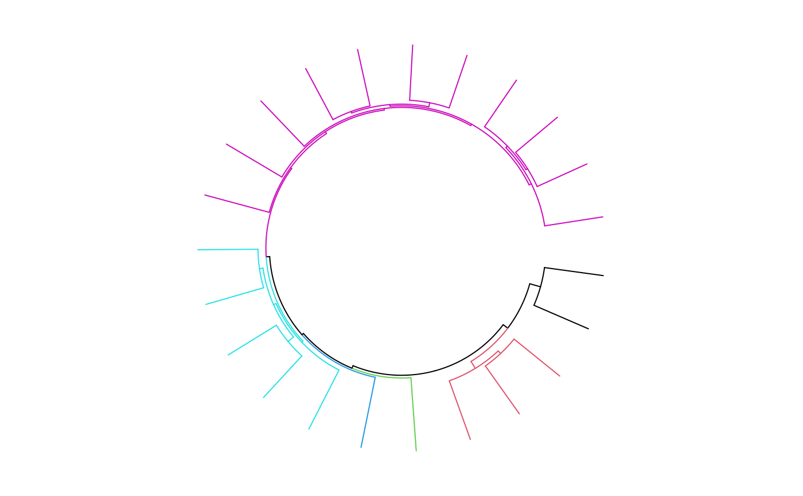

Object ccCellGeom will call the function circlize::circos.dendrogram while drawing.
Usage
ccDendrogram(
dend,
facing = c("outside", "inside"),
max_height = NULL,
use_x_attr = FALSE,
sector.index = get.current.sector.index(),
track.index = get.current.track.index()
)Arguments
- dend
A
dendrogramobject.- facing
Is the dendromgrams facing inside to the circle or outside?
- max_height
Maximum height of the dendrogram. This is important if more than one dendrograms are drawn in one track and making them comparable. The height of a dendrogram can be obtained by
attr(dend, "height").- use_x_attr
Whether use the
xattribute to determine node positions in the dendrogram, used internally.- sector.index
Index of sector.
- track.index
Index of track.
Value
Object ccCellGeom
Examples
library(ape)
#>
#> Attaching package: ‘ape’
#> The following object is masked from ‘package:circlize’:
#>
#> degree
suppressPackageStartupMessages(library(dendextend))
library(circlizePlus)
data(bird.orders)
hc = as.hclust(bird.orders)
labels = hc$labels
ct = cutree(hc, 6)
n = length(labels)
dend = as.dendrogram(hc)
par1 = ccPar(cell.padding = c(0, 0, 0, 0))
cc = ccPlot(sectors = "a", xlim = c(0, n)) # only one sector
dend = color_branches(dend, k = 6, col = 1:6)
dend_height = attr(dend, "height")
t1 = ccTrack(ylim = c(0, dend_height), bg.border = NA,track.height = 0.4)
cell1 = ccCell(sector.index = "a") + ccDendrogram(dend = dend)
cc + par1 + (t1 + cell1)
